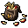
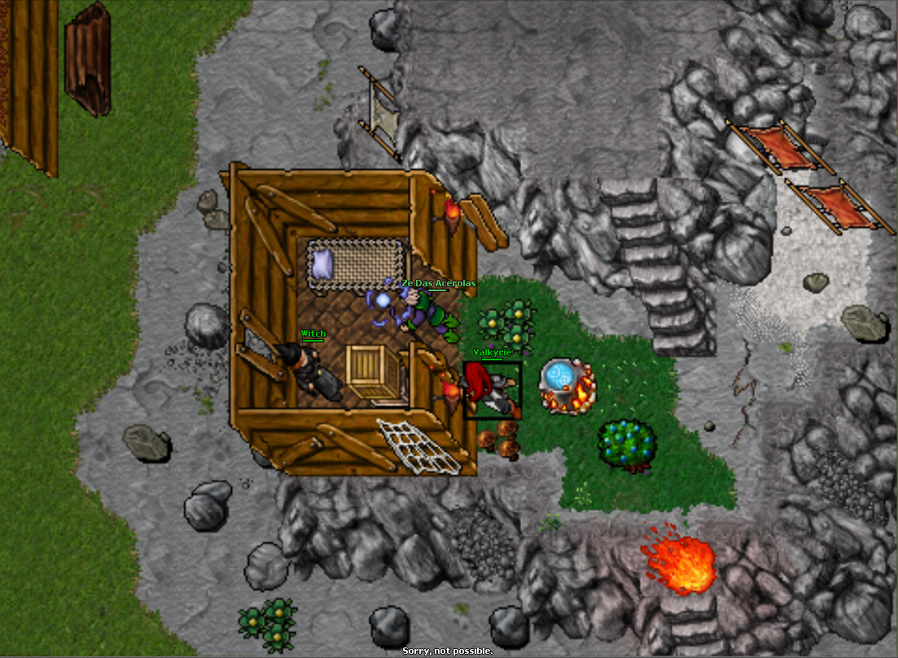
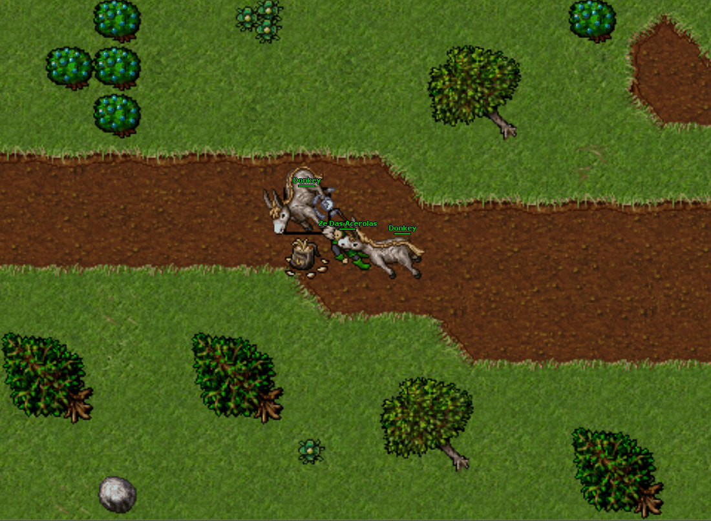

Donkey
para pegar o "Donkey" você precisa do "Bag of the apple slices" e está em edoras para fazer esse percurso.

O item dropa de "Witch" que pode ser encontrado bem perto onde se doma o Donkey na escada a cima
 Tentando Capturar😪
 Home